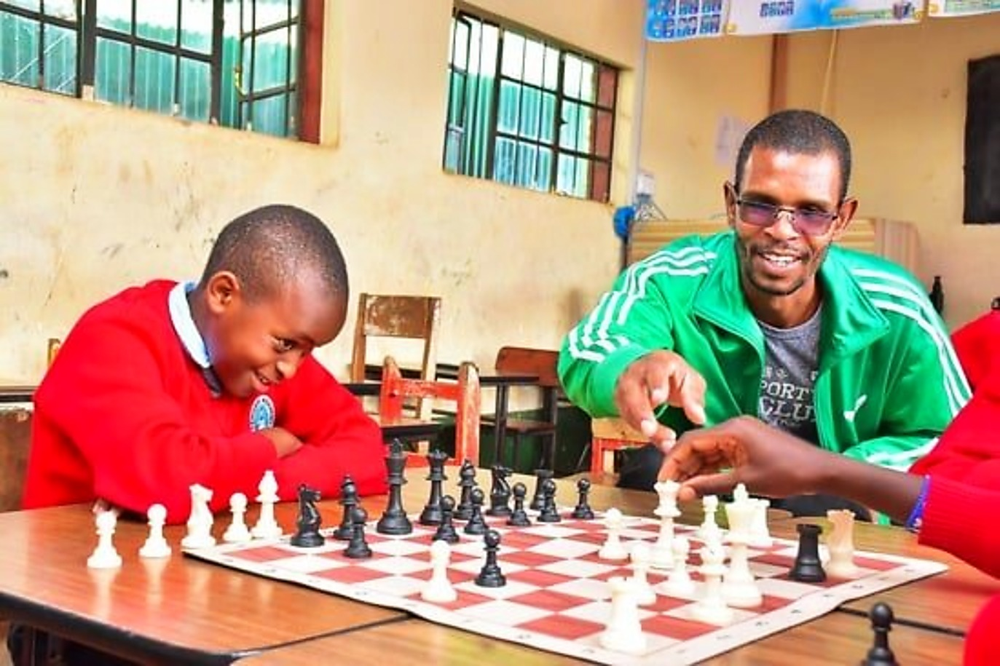

Vision
A board in every school in the county
Chess treated as a normal part of the school week in Kericho — with a club, a coach and a fixture list that children can look forward to every term.

The academy began with a single board carried between schools. The question was always the same: what happens when children get real coaching instead of a borrowed lunch hour?
The answer is on the results tables. Clubs that started with four curious learners now field full squads at inter-school fixtures, and learners who once watched from the corridor now stream their games to their parents' phones.
Underneath the trophies is a simple rule: it starts with how each piece thinks, not just how it moves.
Read about the academy crestThree pieces stand on the crest: the pawn that begins the journey, the king that must be protected, and the knight that finds the way around. Under them sits the rule we coach by — every learner moves forward, one square at a time.
The crest travels with the academy to every school we coach and every fixture we run, from Kericho town to the Olympiad hall.
Four lines that decide what we accept as a coaching job, a fixture or a partnership — and what we turn down.
Chess treated as a normal part of the school week in Kericho — with a club, a coach and a fixture list that children can look forward to every term.
Deliver structured coaching inside schools, run regular competitions with proper clocks and scoresheets, supply the equipment to keep clubs alive, and move Kericho learners onto the county and national chess map.
A non-political, not-for-profit club. These are the objectives our office bearers are elected to deliver.
Advance chess inside Kericho schools and clubs, taught to FIDE rules and tournament standards.
Organise school, club, county and national-level chess — from the weekly club ladder to the county open.
Pick and coach the academy teams that represent Kericho at inter-county and national fixtures.
Help learners and officials get to competitions beyond the county — the same road our Secretary walked to the Olympiad.
Sanction and run tournament-standard events with clocks, scoresheets and proper pairings.
Keep a register of members, partner schools and club officials — with a file per learner.
Maintain progress records and term-by-term reports on every learner's rating, strengths and next steps.
Make sure every partner club's sessions, safeguarding and equipment meet the academy's standard.
Sets, clocks and workbooks for schools building a club — ordered with one WhatsApp message.
Stream Boards 1 to 4 with clocks and evaluation so parents and schools can follow every round.
Keep parents, coaches, schools and players pulling in the same direction on and off the board.
Document the club's milestone games, results and photographs — this site is part of that record.
The short version of a long scorecard — the things that changed how chess runs in Kericho.
A single coach, a single set and lunch-hour teaching that turned into a term-by-term school programme.
Chess clubs established in partner schools with curriculum, ladders and house tournaments — and a queue at the library door.
Regular fixture days with real clocks, scoresheets, arbiters, medals per category and a running honour roll.
The broadcast room streams top boards with live clocks, an evaluation bar and a spectator feed for parents at home.
Our Secretary travelled with Team Kenya to the 46th FIDE Chess Olympiad — and brought the standard back to Kericho.
Registration, fixtures, live boards, a playable board and the club shop — all in one place, all working on a phone.
The office bearers who run the club, the schools that host it, and the squads that carry the name into the circuit.

Chairs the executive and leads all coaching: school clubs, private lessons and tournament preparation.

Deputises for the President across club programmes, partner schools and fixture-day logistics.

Enrolment, membership records, fixture schedules, and the club's link to the national federation circuit.

M-Pesa payments, receipts, membership fees and tournament entries for the whole season.
Primary and secondary schools in Kericho town, Litein and the wider county host weekly clubs through the term. Quotations, club kits, invoices and partnership letters come from the academy office.
Tournament days, prep nights and everything in between.
School, parent or learner: there is a seat at the board for you.